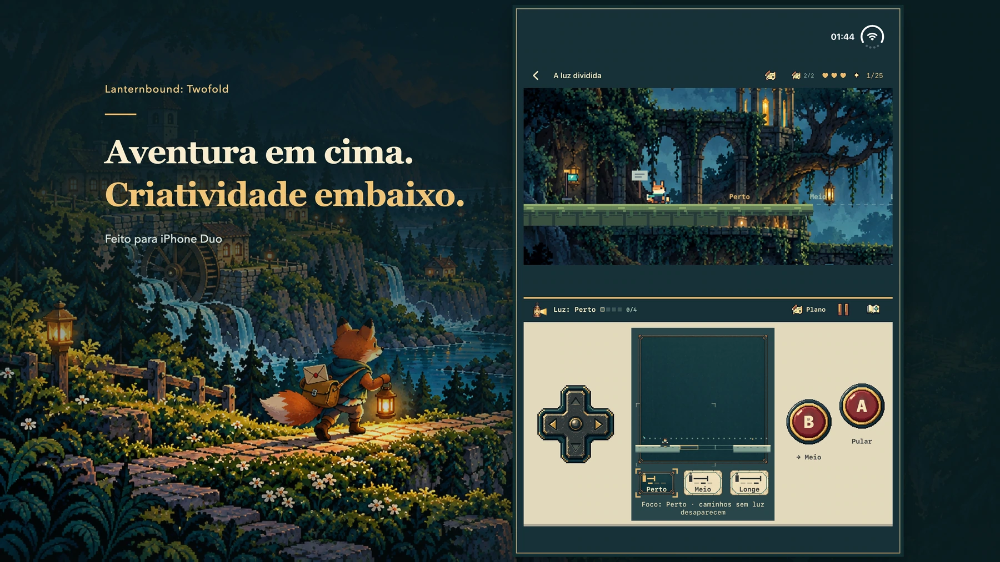

Uma aventura para iPhone Duo
Duas telas. Doze caminhos para casa.
Leve doze cartas por um vale esquecido. Sua lanterna revela o caminho e as vidas que esperam do outro lado.
Veja como jogar
Ilustração promocional; imagens reais do jogo abaixo.
Cada carta abre um caminho.
A tempestade destruiu as estradas. O novo mapa deixou algumas casas de fora. Você é uma jovem raposa carteiro que leva mensagens entre vizinhos e uma carta pessoal ao mentor que parou de responder. Cada entrega leva à próxima. Entregue as doze cartas principais para chegar ao final completo e volte depois para ver o que mudou.

iPhone Duo
A aventura em cima. A próxima jogada embaixo.
O mundo fica na área superior; mapa, instrumentos e controles ficam embaixo. Oriente a tela interna com o mundo acima dos controles. As configurações planas compatíveis mantêm a mesma disposição.
- Mova-se com o direcional, pule com A e use o instrumento atual com B.
- Abra o plano para pausar e estudar o caminho. Volte ao jogo quando estiver pronto.
- Prepare um mecanismo embaixo e faça o salto em cima. Suas decisões mudam os caminhos disponíveis.
Não siga só o caminho mais óbvio.
Siga marcas de mariposa por passagens escuras. Suba até uma rota mais alta, desça por um túnel ou entre em uma sala escondida. Cada capítulo guarda duas lembranças opcionais com pequenas histórias próprias.


Aprenda um. Combine dois.
Revele caminhos com luz, toque um sino com o bumerangue, pare uma plataforma, gire um espelho ou deixe um eco em um interruptor. Cada capítulo reaproveita seu instrumento em quatro desafios principais e combina duas ferramentas específicas em quebra-cabeças por etapas. Alguns desvios mudam a ordem.


Em preparação · Ainda não enviado para análise nem à venda
Uma aventura completa. Uma única compra.
Edição paga planejada exclusivamente para Duo. Uma compra inclui os doze capítulos, sem anúncios, assinaturas ou compras dentro do app. Preço previsto nos EUA: US$ 9,99. Preços locais finais e disponibilidade serão informados na página oficial da App Store.